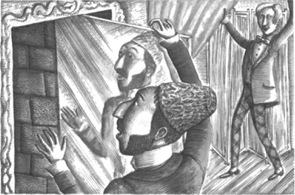

9

Bên dưới Nhà hát Opera
Tôi là người Ba Tư. Tôi biết những bí mật của Nhà hát Opera Paris. Và tôi biết những bí mật của Bóng ma Nhà hát Opera. Ông tin tôi không? Raoul lúc đầu không tin tôi.
Christine đã biến mất khỏi Nhà hát Opera. Cô ấy đáng ra sẽ hát trong vở Faust, nhưng cô ấy đã không xuất hiện! Tối hôm đó, cảnh sát đã lục soát mọi phòng và hành lang trong Nhà hát Opera. Họ đã vào cả tầng hầm.
Họ không tìm thấy Christine. Nhưng họ không biết về tòa nhà. Họ không biết về những cửa sập. Và họ không biết về những đường ngầm ở bên kia hồ! Tôi sẽ kể cho ông về những cửa sập, những đường ngầm và cái hồ.
Cảnh sát không tìm được Christine. Sáng hôm sau, tôi đã gửi một mảnh giấy cho Raoul. Tôi đã chờ anh ấy. Đến chiều anh ấy đã đến nhà tôi.
‘Christine ở đâu?’ anh ấy hỏi. ‘Cô ấy có ở đây không?’
‘Cô ấy ở với Erik,’ tôi nói. ‘Cô ấy ở với Bóng ma Nhà hát Opera.’
‘Ông có thể dẫn tôi đến đó không?’ Raoul hỏi.
‘Được, Raoul,’ tôi trả lời. ‘Hãy đi cùng tôi đến Nhà hát Opera. Chúng ta sẽ tìm Christine.’
——
Tôi đã dẫn Raoul tới Nhà hát Opera. Chúng tôi vào phía sau sân khấu. Chúng tôi vào phòng thay đồ của Christine.
‘Nhà hát Opera này có nhiều bí mật lắm,’ tôi nói. ‘Đây là một trong số đó.’
Tôi tiến lại gần tấm gương lớn trên tường. Tôi nhấn vào cạnh tấm gương. Tấm gương cũng là một cánh cửa. Cánh cửa mở ra! Đằng sau nó là một hành lang tối đen.

‘Bốn ngày trước, Christine đã biến mất khỏi căn phòng này,’ Raoul nói. ‘Tôi đã ở đây với cô ấy.’
Anh ấy chỉ vào chiếc ghế ở góc phòng. ‘Tôi ngồi ở đó,’ Raoul nói. ‘Christine đã biến mất. Tôi không hiểu chuyện gì. Nhưng giờ tôi hiểu rồi. Chiếc gương là một cánh cửa. Christine đã bước qua đó.’
‘Có rất nhiều cánh cửa kỳ lạ trong Nhà hát Opera này,’ tôi nói. ‘Và cũng có nhiều cửa sập - những cánh cửa trên sàn. Có một cái ở dưới Sảnh số 5. Mỗi tối, Erik vào căn phòng của mình bằng chiếc cửa sập đó.’
‘Và cũng có những cửa sập trên sân khấu,’ tôi nói. ‘Tối qua, Christine đã biến mất qua một cái cửa sập trên mặt sàn sân khấu.’
‘Erik - Bóng ma - đã bắt cóc Christine sao?’ Raoul hỏi chậm rãi.
‘Đúng vậy,’ tôi nói. ‘Nhưng Erik không phải là ma. Erik là con người.’
Tôi cầm một chiếc đèn từ trên bàn. Tôi thắp sáng ngọn đèn và bước vào hành lang tối đen đằng sau tấm gương. Raoul đi theo tôi.
Chúng tôi tới cầu thang. Chúng tôi dừng lại một lúc và lắng nghe. Chúng tôi chẳng nghe thấy gì! Rồi chúng tôi đi xuống cầu thang và đi qua vài hành lang tối đen. Rồi chúng tôi lại đi xuống nữa qua những cầu thang tối đen khác. Chúng tôi cứ đi xuống mãi. Chúng tôi đã đi rất sâu xuống phía bên dưới Nhà hát Opera.
‘Erik sống ở đây, bên dưới Nhà hát Opera,’ tôi nói. ‘Chúng ta phải cẩn thận, Raoul. Sàn nhà có nhiều cửa sập. Chúng có thể mở bất cứ lúc nào.’
‘Ông biết gì về Erik?’ Raoul hỏi.
‘Erik có một bí mật khủng khiếp,’ tôi nói. ‘Nhưng ông ấy là một người kỳ lạ và khôn ngoan. Ở quê tôi, chúng tôi gọi ông ấy là Hoàng tử của những cửa sập.’
‘Tại sao ông gọi ông ấy như vậy?’ Raoul hỏi.
‘Erik từng là một kiến trúc sư nổi tiếng,’ tôi nói. ‘Nhiều năm trước, ông ấy sống ở Ba Tư. Ông ấy làm việc cho nhà vua Ba Tư. Erik là kiến trúc sư đã thiết kế nên Cung điện Mazenderan nổi tiếng ở Ba Tư. Tòa nhà đó cũng có rất nhiều bí mật! Có rất nhiều phòng bí mật và hành lang bí mật. Có rất nhiều cửa bí mật và cửa sập.’
‘Tại sao Erik lại tới Pháp?’ Raoul hỏi.
‘Ông ấy không vui ở Ba Tư,’ tôi nói. ‘Ông ấy đã hoàn thành công trình ở Cung điện Mazenderan. Ông ấy muốn rời khỏi Ba Tư. Ông ấy muốn tới Paris. Nhưng nhà vua không muốn ông ấy rời đi. Erik đã trốn thoát. Nhà vua rất tức giận.’
‘Và tại sao ông lại tới đây?’ Raoul hỏi.
‘Nhà vua Ba Tư đã cử tôi tới Pháp,’ tôi nói. ‘Ông ấy bảo tôi rằng, “Hãy tìm Erik! Erik biết hết những bí mật của ta. Hãy tìm ông ta - và giết ông ta đi!” Tôi đã rời khỏi Ba Tư và lần theo dấu vết của Erik.’
‘Nhưng ông đã không giết ông ấy,’ Raoul nói.
‘Không, tôi đã không giết ông ấy,’ tôi trả lời. ‘Erik rất thông minh. Nhưng ông ấy rất bất hạnh. Tôi biết bí mật của Erik. Và tôi thấy tội nghiệp ông ấy.’
‘Tại sao ông ấy lại bắt cóc Christine?’ Raoul hỏi.
‘Erik là một nhạc sĩ tuyệt vời,’ tôi nói. ‘Và ông ấy là một người thầy giỏi. Ông ấy đã dạy Christine hát. Nhưng ông ấy đã dạy cô ấy quá tốt. Sẽ không lâu nữa, cô ấy sẽ trở thành một ca sĩ nổi tiếng. Trước đây, cô ấy chỉ hát cho Erik. Nhưng giờ cô ấy sẽ hát cho cả thế giới. Erik buồn lắm. Erik yêu Christine.’
‘Nhưng tôi cũng yêu Christine,’ Raoul nói. ‘Tôi phải đưa cô ấy khỏi tay Erik.’
‘Erik sẽ không để cô ấy đi đâu,’ tôi nói. ‘Erik từng là người bạn duy nhất của cô ấy. Cô ấy từng chỉ hát cho mình ông ấy. Nhưng tối qua, cô ấy đã hát cho ông. Erik rất tức giận!’
‘Christine có muốn ở lại với Erik không?’ Raoul hỏi.
‘Chúng ta sẽ hỏi cô ấy câu hỏi đó sớm thôi,’ tôi trả lời.
Mục lục
- Tiêu đề
- Mục lục
- Ghi chú về tác giả
- Ghi chú về câu chuyện này
- Nhân vật trong câu chuyện
- 1 Thiên thần âm nhạc
- 2 Một buổi tiệc tại nhà hát Opera
- 3 Raoul đến nhà hát Opera
- 4 Ghế số 5
- 5 Tấm gương trong phòng riêng
- 6 Vũ hội hóa trang
- 7 Câu chuyện của người Ba Tư
- 8 Christine biến mất!
- 9 Bên dưới nhà hát Opera
- 10 Hồ và cây
- 11 Bóng ma nhà hát Opera
- Bản quyền